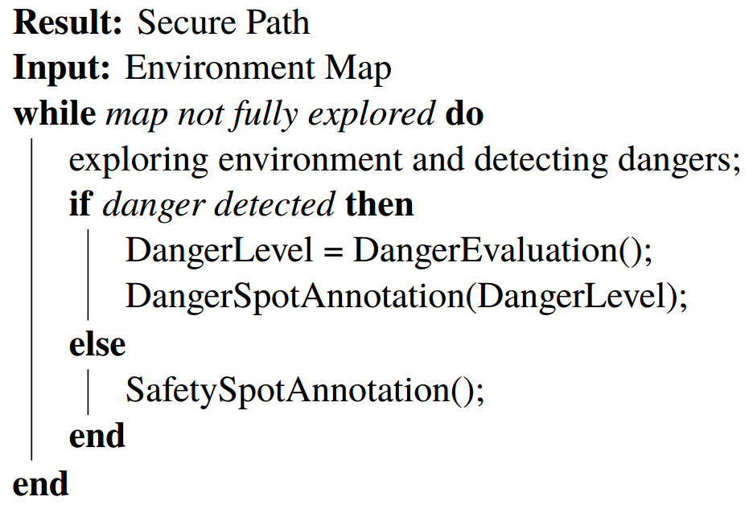
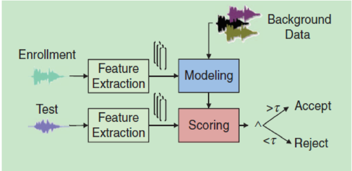
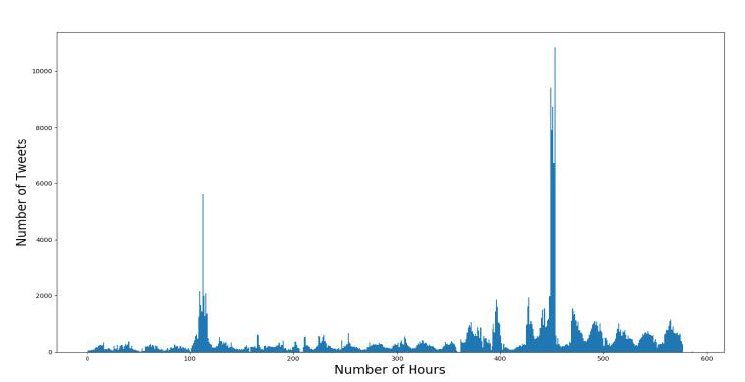
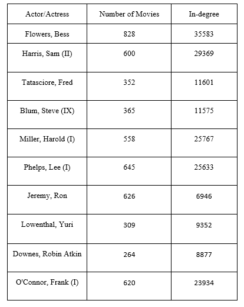
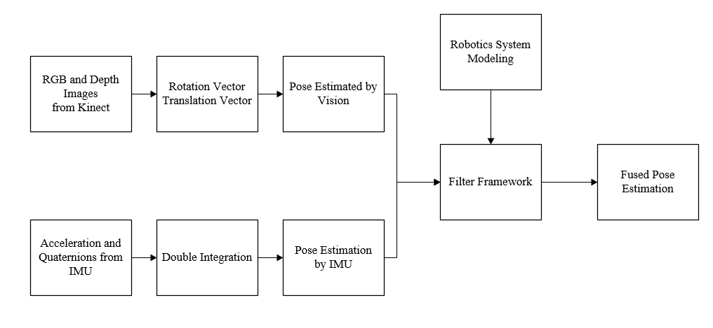
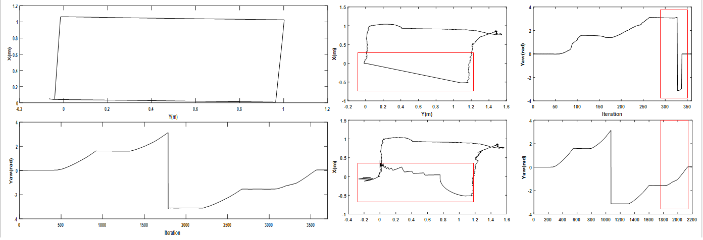

Guanqun Yang
Master Student in UCLA ECE Department
Currently, my projects are mainly focused on statistical machine learning and its application in speech signal processing, recommendation system, text mining. I am also interested in optimization and graph structures in real world problems.
Previously I spent a lot of time on both lower level design and fabrication and higher level control and pose estimation of mobile robots.
Statistical Machine Learning and its Applications
Statistical machine learning is a process of incrementally improving the performance of computer systems under certain metrics by employing statistical techniques but without prior explict programming. The core of (supervised) machine learning is to find patterns of given data and apply this pattern to previously unseen data and thereby giving predictions of them. Because of the universal needs for pattern recognition, the machine learning techniques are applicable to a wide range of areas including art, humanities, economics and many others.
A Comparative Study of Fairness-Preserving Algorithms
Algorithmic decision making (ADM) systems are extensively used in applications including automatic essay scoring, individual credit trustworthiness evaluation, job applicant selection, and many others. Despite their objectiveness over humans, as a result of societal and historical prejudice against some groups, such systems could also give biased predictions when sensitive attributes such as race, sex are involved. In this project, we compare three types of fairness-preserving algorithms that address the fairness issues in different phases of machine learning workflow under type-I and type-II parity. Specifically, we compare
Preprocessing: divide the original dataset based on label and features and select samples in each subgroup based on weights.
Inprocessing: directly encode fairness constraints into the formulation of the machine learning algorithm.
Postprocessing: adjust predicted labels based on the certainty of prediction.
We observe that all three algorithms could remove bias under our metric. However, it is recommended to intervene at the earliest possible stage to gain most utility and flexibility.
Autonomous Motion Planning by Deep Reinforcement Learning for Fall Prevention in Hospitals
|
 |
The cost and availablity of elderly care service has gradually become a major concern with ever increasing elderly population. At the same time, mobile robots feature the ability to perform repetitive tasks with high efficiency and accuracy in these environment, which makes them suitable alternatives to nursery professionals. In this project, we aim to implement a system that could detect the danger factors in the environment and then lead the elderly people to their destination via the detected secure route by deep reinforcement learning.
The system could consists of two parts in cascade, namely object detection and motion planning, and the system arthitecture could be alongside.
The environment map is first fed into the system and mobile robots explore the environment and make safety or danger annotation on the map until all areas are annotated. Then mobile robot detects a secure route that is suitable for user to his/her destination. Finally, the robot lead user to the destination.
|
Speech Segment Identification for Person Recognition
|
 |
The similarity measure and estimation system is an important component of automatic speaker recognition (ASR) system and this process decides the performance of such systems. However, the accuracy of similarity evaluation degrads when speech segment is short or is polluted by noise. In this project, we manages to develop a speech segment identification system specifically designed to address these issues.
Multiple traditional algorithms including SVM, GMM and neural network are attempted but shown invalid because of above mentioned problems. Dynamic time wrapping algorithm, however, turns out to be successful. Specifically, the similarity is measured by DTW algorithm and used to generate a threshold in training time. With the help of the threshold, the testing speech segments are compared and a similarity measure is made available.
Two important measures, TPR or sensitivity and FPR or specificity, are less than 15% under clean conditions and less than 35% under noisy conditions with 10dB babble noise.
|
Yucong Wang, Jingjing Zhang, Guanqun Yang, Zhengtao Zhou, Design and Implementation of Speaker Similarity Estimation System based on UCLA Variablity Database, 2018
[Full Text]
Popularity Analysis of Twitter Hashtags for SuperBowl 2015
|
 |
Twitter is a major social networking service where people could post and interact with messages known as tweets. One of the most important features of this service is the introduction of hashtags. Spontaneously added by users, they could be used to categorize tweets of different topics. In this project, we will explore six hashtags collected during three weeks (specifically, from two weeks before and one week after the event) when SuperBowl 2015 took place, including #GoHawks, #GoPatriots, #NFL, #Patriots, #SB49 and #SuperBowl.
We employ only linear model and try to investigate its power and shortcomings for time-series prediction. More detailed, five features, including number of tweets and reweets, sum and maximum number of followers for a specific hashtag and time of day in UTC format, are extracted from the Twitter metadata and a linear model trained on time-step \(k\) (in hour) data is used to predicte the Twitter activity on time-step \(k+1\) (in hour). In order to validate the predictions of the linear models, \(t\)-test are conducted and associated p-values are compared. From our analysis, it turns out that
Dynamics of some hashtags are more difficult to predict than others and this does not come from their internal statistics. For example, the hashtag #GoHawks could fit linear model well while the fit for #GoHawks is surprisingly poor.
Linear model could still make fair predictions when nonlinearity is mild. However, when system dynamics indicate strong nonlinearity, for example, the hashtag activities on Feb. 01, the event day, could not be well predicted for any hashtag.
|
Graph Structure in Real World Problems
The elements of graph (vertices, edges and weights associated with edges) make the it suitable for representing relations and result in many applications of graph structures in social network, transportation and many others. The following are two of my projects that explore the graph structure in cooperative relation in entertainment industry and general property of public transportation.
Cooperative Relation between Movie Actors/Actresses
|
 |
The IMDb database provides a comprehensive summary of numerous properties of movies, including actorsactresses list, genre, rating and many others. In this project, we manage to explore the cooperative relations in entertainment industry and evaluate the influence of actors/actress.
The collaboration graph between actors/actresses is a weighted directed graph where each vertix represents a actor or actress and the weight
\[
w_{ij}=\frac{\vert S_i \cap S_j\vert}{\vert S_i\vert}
\]
indicates the level of collaboration between two people. By exploring edges associated with some famous actors/actresses, the results are just like we anticipate (see table alongside). However, when we evaluate the ten actors/actresses with highest influence by PageRank score, contrary to our prior knowledge, none of them are famous. To see why this happens, check out my GitBook.
|
Uber Movement in San Francisco
This project aims to analyze the graph structure of more than 1.6 million travelling data in San Francisco area during Deceumber 2017. Major elements of graph are first extracted from metadata and they are then used to generate graph, find GCC and finally converted to a legal undirected simple weighted graph.
Multiple graph structures are explored in the resulting graph including MST and maximum flow. What is more, an approximate algorithm is attempted to solve the travelling salesman problem in this graph.
The medadata is available here.
Convex Optimization
Convex optimization is the backbone for solving problems arsing from areas such as machine learning, control, estimation and signal processing and even finance. Many machine learning algorithms gain their popularity because of their underlying convexity of their formulation, including Linear and Logistic regression, SVM (Support Vector Machine) and others. Even though convex optimization is largely seen as a technology, which shows maturity of many existing algorithms, in order to better understand the mechanism of this process, a SVM classifier is implemented from stratch with the help of CVX.
A Generic Linear Classifier Implementation for Image Recognition
Linear SVM is a popular linear classification algorithm extensively used in many applications including classification of images, texts and even chemical ccompounds. Depending on number of classes to be classified, the tasks are categorized into binary and multiclass classification problems. The solution of multiclass classification is made possible by numerous strategies including transforming into binary classification, extension of binary classification and hierarchical classification. In this project, we are aiming to classify handwritten digits based on MNIST dataset using the first strategy mentioned above. Suppose we have \(K\) classes of data points to be classified (in our dataset, \(K=10\)), then we have two schemes:
One-versus-One (OvO): \(\frac{K(K-1)}{2}\) classifiers are generated in training time. In testing time, each query point is tested on all classifiers. For each classifier, the membership of query point is determined and recorded. After \(\frac{K(K-1)}{2}\) rounds of comparisons, the query point will have votes on class 1, class 2, \(\cdots\), class \(K\). Eventually, the query point's membership is decided by the class which has maximum number of votes.
One-versus-All (OvA): \(K\) classifiers are generated in training time. In testing time, each query point is also tested on all classifiers. For each classifier, the membership could only be determined when query point belongs to specific class. In other cases, the decision is no more valid and a random membership is assigned.
From the description of two different scheme, the OvO scheme should provide more accurate prediction, which is evident in the figure alongside. Note the Sampling Ratio means the number of data points used from the original dataset.
Previous Projects
The following projects are completed during my undergradute studies in Northeastern University, China. These projects are mainly focused on design and implementation of robotics control systems.
Pose Estimation of Mobile Robots Based on the Integration of IMU and Vision
|
 |
Pose estimation is an integral part of mobile robot locomotion and it directly determines the locomotion accuracy of such systems. Both IMU-based kinematics methods and vision-based methods are able to provide pose information of robots. However, the former one is prone to unevenness of ground while the performance of the latter one degrads when illumination fluctuates. In this project, these two mathods are integrated under Kalman filter framework. Two sources of information are first integrated using Extended Kalman Filter (EKF). Then, in order to address the sudden maneuvering of mobile robots and to adaptively adjust the contribution of two sources, Interactive Multiple Model (IMM) framework is employed.
|
|
 |
Experimental results indicate the validity of such systems.
The mobile robot is instructed to move in a square and the left part of figure is the ground truth pose acquired using high-precision motion capturing device. The pose estimation provided by Kinect lost track of features because of environment change and therefore provided inaccurate information about the pose (the top figure on the right). After integrating this pose with the one provided by IMU, the position estimation is improved and the orientation estimation is corrected (see marked part), showing success of this integration.
|
SVPWM Controller Implementation for 3-Phase Asynchronous Motor
Three-phase asynchronous motor features non-linearity in mathematical model and tight electromagnet coupling and this makes his family of motors is hard to effectivley control by solely using regular PID controllers. Space vector pulse width modulation (SVPWM) algorithm manages to generates sinusoid waves by simple ON/OFF operations of power electronic devices like IGBT. Incorporting PID controllers into the system, this project manages to implement double loop SVPWM governing system in C++ on TMS320F2812 DSP by Texas Instruments. The 3-phase asynchronous motor in SVPWM system could be governed like AC motor with high precision and low latency.
Design and Implementation of a Flapping Propulsion Plant for Underwater Robot
Some underwater tasks like seabed exploration require relatively low velocity but high flexibility and this makes the traditional screw propulsion solution no more applicable. In this project, we design and implement a bionic propulsion system inspired by sea turtles, where flipper could move in four degrees of freedom (elevating/heaving and walking/surging), and therefore make possible low-velocity underwater maneuvering.
This propulsion system consists of two cyclinders, where each controls two degrees of freedom, and the flipper is governed by AC motor in outer cycliner, which is in turn controled by another AC motor fixed in the inner cyclinder. Based on the prototype of our design, multiple key parameters were identified experimentally and analytically for system model. Furthermore, different control algorithms were employed for rapid response of mechanical structure of the prototype. Specifically, deadbeat and ripple-free algorithm showed best dynamic and static characteristics. The prototype of propulsion system indicated its flexibility and extensibility for underwater exploration in low-speed setting.
Guanqun Yang, Qiwang Jia, Dong Zhao, Hongpeng Yang, Undergraduate Innovation Initiative, Chinese Academy of Sciences, 2016
Advisor: Prof. Haitao Gu
|